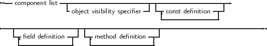
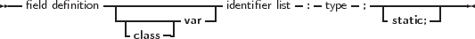

Free Pascal supports object oriented programming. In fact, most of the compiler is written using objects. Here we present some technical questions regarding object oriented programming in Free Pascal.
Objects should be treated as a special kind of record. The record contains all the fields that are declared in the objects definition, and pointers to the methods that are associated to the objects’ type.
An object is declared just as a record would be declared; except that now, procedures and functions can be declared as if they were part of the record. Objects can ”inherit” fields and methods from ”parent” objects. This means that these fields and methods can be used as if they were included in the objects declared as a ”child” object.
Furthermore, a concept of visibility is introduced: fields, procedures and functions can be declared as public, protected or private. By default, fields and methods are public, and are exported outside the current unit.
Fields or methods that are declared private are only accessible in the current unit: their scope is limited to the implementation of the current unit.
The prototype declaration of an object is as follows:
_________________________________________________________________________________________________________
object types


___________________________________________________________________
As can be seen, as many private and public blocks as needed can be declared.
The following is a valid definition of an object:
It contains a constructor/destructor pair, and a method to get and set a caption. The Caption field is private to the object: it cannot be accessed outside the unit in which TObj is declared.
Remark: In MacPas mode, the Object keyword is replaced by the class keyword for compatibility with other pascal compilers available on the Mac. That means that objects cannot be used in MacPas mode.
Remark: Free Pascal also supports the packed object. This is the same as an object, only the elements (fields) of the object are byte-aligned, just as in the packed record. The declaration of a packed object is similar to the declaration of a packed record :
Similarly, the {$PackRecords } directive acts on objects as well.